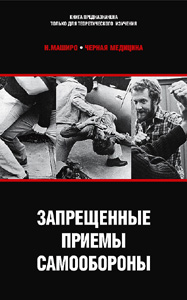

Н. Маширо • Черная медицина • Перевод: А. Ширинский • энциклопедии • 08.03.2005

Знате ли вы, как использовать газовое оружие и электрошокеры? Сможете ли выстрелить из винтовки и пистолета, когда вас бьют? Как защищаться, если вас душат или не дают двигаться, как без оружия противостоять ножам и дубинкам. Самоучитель доктора Маширо дает ответы на эти вопросы. Объясняет он и психологические трюки, с помощью которых вы сможете изменить ситуацию нападения в свою пользу. Эту книгу обязательно должны прочесть люди, которые изучают или преподают приемы самозащиты, и те, кто просто хочет выжить.
ПРЕССА и КОНТЕКСТ
Н. Маширо :: Чёрная медицина: Тёмное искусство смерти, или как выжить в мире насилия (Серж Властьев, www.nork.ru, 05.12.2006)
Можно, наверное, простить доктору философии М. Маширо столь вульгарное определение чёрной магии, из которого он выводит определение такой же по цвету медицины: “Термин «чёрная медицина» возник по аналогии с термином «чёрная магия». Так же, как существует белая магия, занимающаяся добром, и чёрная, ориентированная на зло, есть белая, исцеляющая, медицина и чёрная – медицинские и анатомические познания, которые используются, чтобы калечить и убивать” (стр. 7). Эта высшая учёная степень – доктор философии – присваивается после нескольких лет научной работы и защиты диссертации перед состоящей из профессоров комиссией магистрам как гуманитарных, так и естественных наук, так что не факт, что Маширо работает в области этой самой философии, или культуры, или истории, или литературы, чтобы иметь верное суждение о подобных вещах. Хотя пишет он действительно здорово – не поспоришь. Ну да чёрт с этой чёрной магией (нечастый случай, когда связь с чёртом поминается не в переносном смысле), в конце концов, что такое чёрная медицина, из этого определения более или менее понятно. Добавим, впрочем, ещё одну цитату каратиста-интеллектуала (судя по фамилии, “дальневосточного происхождения”), чтобы стало совсем уж ясно: “Чёрная медицина – это смертельное искусство, изучение которого может вызвать тошноту” (стр. 57). Впрочем, от “белой” медицины тоже частенько поташнивает.
Книга состоит из четырёх частей, каждая из которых в своё время была издана отдельной брошюрой в серии “Чёрная медицина” – это “Жизненно важные точки человеческого тела в ближнем бою” – собственно, первая книга в оригинале и называлась “Тёмное искусство смерти” (1978), далее “Подручное оружие” (1979), “Подлые удары” (1981) и “Уравнители” (1994). Очень богато проиллюстрированное издание. Иначе, впрочем, и быть не может.
Разумеется, опасность темы, которой Маширо посвятил свой труд, постоянно оговаривается. Причём, если во вступлении к первой части он делает упор на специфичность аудитории, на которую ориентирована “Чёрная медицина”: “Данное руководство предназначено прежде всего для изучающих карате или приёмы самозащиты, полицейских и служащих боевых воинских подразделений, людей, которым знание анатомии однажды может спасти жизнь” (стр. 7); то в четвёртой книге он уже подразумевает, что прочитать-то её может любой: “Я исхожу из того, что вы ответственный человек и не передадите знания, почерпнутые вами из этой книги, людям не подготовленным” (стр. 203).
“Плохие парни”, против которых, собственно, и направлена эта книга, тоже упоминаются: “Конечно, найдутся люди, которые решат, что довольно мрачный материал этой книги не должен быть доступен широким массам, поскольку его могут использовать и преступники. На это я могу сказать, что преступники и так об этом знают … по своему жестокому и отвратительному опыту” (стр. 8) . Понятное дело, что далеко не все преступники действительно обладают содержащимися в этой книге сведениями и познаниями, и даже более того – лишь немногие из них, т. н. “матёрые”, могут похвастаться каким-то “интеллектуальным” багажом искусства убийства. Понятно и то, что после этой книги число “преступных элементов”, подкованных по теории убийства, всё-таки возрастёт, потому что среди представителей означенной категории лиц встречаются такие, которые читают книги, несмотря на то, что автор утешает себя тем, что “человек, который калечит людей ради смеха (или выгоды), слишком занят шатанием по улицам и у него нет времени читать книги” (стр. 203). Наверное, титул автора – доктор философии – больше всего проявляется именно в этом высказывании, столь характерном для “оторванного от народа” интеллигента. Ладно, затронутая проблема – это, как говорится, “палка о двух концах”, и обсуждать её мы не намерены, так как вообще не видим смысла в каких-то гуманистических оправданиях издания т. н. “опасной литературы”.
Так для кого же предназначена эта книга? Для приличных девушек, обожающих шляться по ночам в тёмных переулках? Для сухопарых интеллигентов и пенсионеров, боящихся зайти в собственную парадную? Ну, не будем дальше перечислять – в общем, для обычных, рядовых, нормальных людей, которые тоже запросто могут попасть во “внештатную ситуацию” – время-то нынче тревожное. Вроде бы – да, для нормальных людей. Для нормальных? Прежде чем категорически ответить на этот вопрос, процитируем автора-специалиста: “Главная разница между искусными бойцами и «нормальными» людьми в том, что искусные бойцы преодолели столь широко распространённое побуждение спрятать голову в песок” (стр. 50).
Как раз таки “нормальным” людям “Чёрная медицина” и не нужна. Автор сам откровенно проговаривается об этом (неоткровенно он проговорился ещё в первой книге, обозначив контингент читателей) во вступлении к третьей части (которая, между прочим, совершенно бесполезна без практических занятий, – если остальные части при желании можно прочитать и запомнить, то здесь придётся попотеть в прямом смысле слова, а “нормальные” люди, как известно, потеть не любят): “Восторг, с которым приняли эти книги в сообществе б о й ц о в [выделено нами – С. В.], стал для меня источником великой радости и гордости” (стр. 115). Понятно? Далее Маширо делает следующее замечание: “Я по опыту знаю, что человек, который уже научился драться голыми руками, легко научится и обращению с оружием” (стр. 118), – это тоже сказано не про “нормальных” людей.
Таким образом, мы склоняемся к мнению, что “Чёрная медицина” предназначена вовсе не для “нормальных” людей, а для тех, кому изложенная в книге информация действительно нужна: для бойцов и для имеющих твёрдое намерение стать ими. Не скучающим бойцам тоже приходится пользоваться всякими подручными средствами – когда они сражаются с превосходящими силами противника.
Впрочем, разбросанные по всей книге шутки предназначены именно для этого “нормального” человека – ему так легче материал усваивать (это хорошо известный приём педагогов), хотя, бойцы тоже не обязательно суровые сухари. Приведём парочку таких шуток: “Была у них [Джона Т. Томпсона и Луиса А. Ла Гарда – исследователи воздействия разных моделей пистолетов и пуль на человеческое тело] такая замечательная мысль, что, когда вражеский солдат замахивается на тебя мачете, будет неплохо, если твой выстрел убьёт его наповал, а не поцарапает” (стр. 41).
(Кстати, согласно упомянутым исследователям, “жизненно важные зоны для стрельбы из пистолета – это мозг, спинной мозг и трубчатые кости ног. Это единственные части тела, выстрел по которым мгновенно свалит противника с ног. Выстрелы в сердце или по основным кровеносным сосудам тоже, скорее всего, будут фатальными, но коллапс может произойти не сразу, что создаст опасность для жизни стреляющего” (стр. 42). В общем, враньё показывают в фильмах. И то, что от пули в грудь человек может улететь за, например, стойку бара, тоже враньё – Маширо всё подробно расписывает. Но у Тарантино такого, хвала Всевышнему, нет.)
Далее: “Наши доисторические предки предпочитали [речь идёт об использовании костей в качестве оружия] плечевую кость антилопы, но тому, кого вы будете бить, это, скорее всего, будет не важно” (стр. 86); “Я бы очень хотел сказать вам, что если ударить кого-нибудь по голове рулоном туалетной бумаги, то вы сможете его убить, но, к сожалению, скорее всего, из этого ничего не выйдет” (стр. 110); “Итак, вы сжимаете в руках пистолет преступника. Злодей бросается на вас, и вы нажимаете спусковой крючок. Ничего не происходит. Что же вам делать? Если вы бросите в него пистолет, я найду вас и задушу собственными руками. Такой кретин недостоин жизни” (стр. 263). Ну, кстати, последняя шутка ориентирована как раз таки на “нормального” человека, оказавшегося (или вздумавшего поучаствовать) в экстремальной ситуации. А некоторые рекомендации Маширо, нацеленные именно на “нормального” человека, вообще такого рода, что и не понятно, серьёзно он это пишет, или нет. Может быть, это он так жёстко стебётся (пардон) над “нормальным” человеком: “Кстати, только идиот будет тренироваться с настоящим ножом. Если у вас нет резинового ножа, используйте деревянную ложку. Или линейку. Или свёрнутый в трубочку журнал. Если будете использовать настоящий нож во время тренировки, то вам придётся объясниться с врачом и, возможно, со служителями закона, так что вы будете выглядеть как полный кретин. Здравый смысл поможет вам избежать подобной ситуации” (стр. 235). С другой стороны, вспоминается случай, давно описанный в газетах: один американец занимался бегом с тяжестями, и однажды в качестве таковой он использовал стиральную машину (!), но, то ли сил не рассчитал, то ли машина оказалась тяжелее, чем он думал, в общем, этот “экстремал” повредил позвоночник. И что же? Он подал в суд на фирму стиральных машин, обвинив их в том, что в инструкции по эксплуатации не говорилось, что бегать со стиральными машинами запрещено! Смешно? Но процесс этот парень-не-промах выиграл! Так что мы были не всегда уверены, что Маширо шутит, когда натыкались на… странные, скажем так, места.
Часто тщательность, даже дотошность автора в объяснении того, как при самообороне следует использовать тот или иной предмет, может быть оправдана только тупостью предполагаемого читателя (т. е., вообще говоря, “нормального” человека), которому всё разжуй, да в рот положи. В конечном итоге обширный каталог способных быть использованными в качестве оружия предметов (их более 180) может сыграть злую шутку с неподготовленным, лишённым фантазии читателем (т. е., опять же, с “нормальным” человеком): в момент опасности он будет искать те предметы, о которых прочитал, и вспоминать, как именно ими рекомендуется пользоваться. В то время как суть книги сводится к тому, что в экстремальной ситуации следует хватать всё, что попадается на глаза, и… использовать не по прямому назначению: “Во многих случаях реальная функция «оружия» – убедить себя в том, что вы бьёте противника не голой рукой. Если вы верите, что бьёте каким-то предметом (не имеет значения, насколько он мал), то вас покидает страх повредить руку. В результате вы бьёте намного сильнее” (стр. 100). Маширо объясняет это, кстати, в пункте про… спичечный коробок.
Мы всё ходим вокруг да около, не обсуждая само содержание “Чёрной медицины”. Но ведь оно такого рода, что обсуждать его нечего. Это как руководство по изготовлению взрывных устройств или подделке документов: или для дела, или на фиг не нужно.
Впрочем, выделим, пожалуй, из рассмотренных автором аспектов боя такой его необычный элемент, как крик: “Все видели искусных бойцов, которые орут как сумасшедшие, когда атакуют. Это более наглядный пример психологического запугивания. Но одного крика недостаточно. Крик должен обладать эмоциональным содержанием, чтобы подействовать надлежащим образом. Так звучит крик ярости или ненависти…” (стр. 62). Позже Маширо, повторив эти рекомендации, даёт ещё один совет: “Кричите по возможности громко. Лучше всего – что-нибудь непристойное” (стр. 277). Мы это к чему рассказываем: в фильме Сергея Бодрова “Кавказский пленник” (1996) есть один эпизод, который долгое время не давал нам покоя в силу своей чуть ли не тупости: когда чеченцы, прикалываясь, затевают бои с пленными русскими, прапорщик Саша (Олег Меньшиков) советует струхнувшему рядовому Жилину (Сергей Бодров-младший) погромче орать – и это сработало. У этого приёма, оказывается, есть теоретическая база.
В общем, сами определяйтесь, нужна вам эта книга, или нет. Да, и помните, что “некоторые люди являются прирождёнными жертвами” (стр. 54). Уж эта-та информация вам в любом случае пригодится.